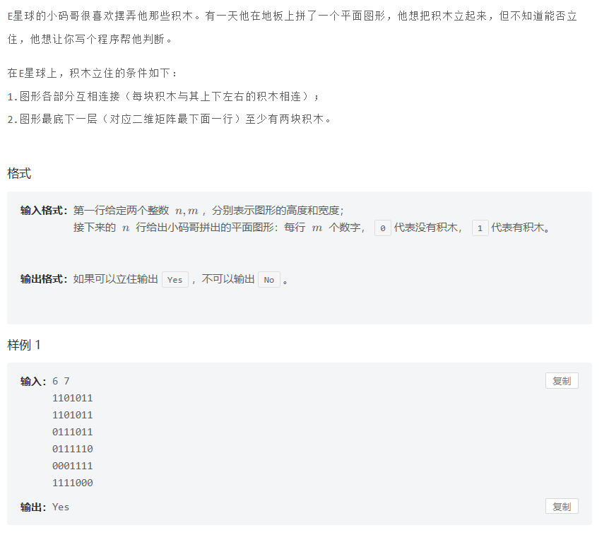

MT3055 交换排列
题目：
思路： 若数对为\((1,4)\) 和\((4,7)\) ，则说明\(14\) 可以互换，\(47\) 可以互换，并且\(17\) 也可以互换。所以把可以交换的元素放到一个集合中。
例如样例1：有三个集合，分别为\(147\) ，\(369\) ，\(258\) 。排列中第一个元素为\(1\) ，所以在\(147\) 中找最大的数\(7\) 输出；排列中第二个元素为\(2\) ，所以在\(258\) 中找最大的数8输出。（寻找最大值用大根堆/优先队列存储）
代码： 1 2 3 4 5 6 7 8 9 10 11 12 13 14 15 16 17 18 19 20 21 22 23 24 25 26 27 28 29 30 31 32 33 34 35 36 37 38 39 40 41 42 43 44 45 46 47 48 49 50 51 52 53 54 55 56 57 58 59 60 61 #include <iostream> #include <queue> #include <cstring> using namespace std ; int flag[200010 ];int num[200010 ];priority_queue <int >S[200010 ];int uni (int i) { while (flag[i] >= 0 )i = flag[i]; return i; } void conuni (int i, int j) { int flag_i = uni(i); int flag_j = uni(j); if (flag_i == flag_j)return ; int temp = flag[flag_i] + flag[flag_j]; if (flag[flag_i] < flag[flag_j]) { flag[flag_j] = flag_i; flag[flag_i] = temp; } else { flag[flag_i] = flag_j; flag[flag_j] = temp; } } int main () { int n, m; cin >> n >> m; memset (flag, -1 , sizeof (num)); for (int i = 1 ; i <= n; i++) { cin >> num[i]; } for (int i = 0 ; i < m; i++) { int a, b; cin >> a >> b; conuni(a, b); } for (int i = 1 ; i <= n; i++) { S[uni(i)].push(num[i]); } for (int i = 1 ; i <= n; i++) { int temp_num = S[uni(i)].top(); S[uni(i)].pop(); cout << temp_num << " " ; } return 0 ; }
MT3054 搭积木
题目：

图片
思路： 把二维矩阵转化成一维编号，之后将编号使用并查集，看最后所有的\(1\) 是否在同一个集合中即可。
代码：
1 2 3 4 5 6 7 8 9 10 11 12 13 14 15 16 17 18 19 20 21 22 23 24 25 26 27 28 29 30 31 32 33 34 35 36 37 38 39 40 41 42 43 44 45 46 47 48 49 50 51 52 53 54 55 56 57 58 59 60 61 62 63 64 65 66 67 68 69 70 71 72 73 74 75 76 77 78 79 80 81 82 83 84 85 86 87 88 89 90 91 92 93 94 95 96 97 98 99 100 101 102 103 104 105 106 107 #include <iostream> #include <cstring> using namespace std ; const int N = 1e3 + 7 ;int n, m;char num[N][N];int flag[N * N];int di[4 ] = { 1 ,-1 ,0 ,0 };int dj[4 ] = { 0 ,0 ,1 ,-1 };int uni (int i) { while (flag[i] >= 0 )i = flag[i]; return i; } void conuni (int i, int j) { int flag_i = uni(i); int flag_j = uni(j); if (flag_i == flag_j)return ; int temp = flag[flag_i] + flag[flag_j]; if (flag[flag_i] < flag[flag_j]) { flag[flag_j] = flag_i; flag[flag_i] = temp; } else { flag[flag_i] = flag_j; flag[flag_j] = temp; } } int num_to_flag (int i, int j) { return (i - 1 ) * m + j; } int main () { ios::sync_with_stdio(0 ); cin .tie(0 ), cout .tie(0 ); memset (flag, -1 , sizeof (flag)); cin >> n >> m; for (int i = 1 ; i <= n; i++) { for (int j = 1 ; j <= m; j++) { cin >> num[i][j]; } } int count = 0 ; for (int i = 1 ; i <= m; i++) { if (num[n][i] == '1' ) count += 1 ; } if (count < 2 ) { cout << "No" << endl ; return 0 ; } int root = 0 ; for (int i = 1 ; i <= n; i++) { for (int j = 1 ; j <= m; j++) { int temp_flag = num_to_flag(i, j); if (num[i][j] == '0' ) continue ; if (!root) root = num_to_flag(i, j); for (int k = 0 ; k < 4 ; k++) { int temp_i = i + di[k]; int temp_j = j + dj[k]; if (temp_i<1 || temp_i>n || temp_j<1 || temp_j>m) continue ; if (num[temp_i][temp_j] == '1' ) { conuni(temp_flag, num_to_flag(temp_i, temp_j)); } } } } root = uni(root); for (int i = 1 ; i <= n; i++) { for (int j = 1 ; j <= m; j++) { if (num[i][j] == '1' ) { int temp_flag = num_to_flag(i, j); if (uni(temp_flag) != uni(root)) { cout << "No" << endl ; return 0 ; } } } } cout << "Yes" << endl ; return 0 ; }
MT3056 交换序列
题目：
思路： 和3055交换排列类似，将位置可以交换的元素放到同一个并查集里面，然后判断目标序列每一个位置上的元素是否和原来位置上的元素（即位置序号，因为一开始的序列为\(1,2,3,\ldots n\) )处于同一个集合中即可。
代码：
1 2 3 4 5 6 7 8 9 10 11 12 13 14 15 16 17 18 19 20 21 22 23 24 25 26 27 28 29 30 31 32 33 34 35 36 37 38 39 40 41 42 43 44 45 46 47 48 49 50 51 52 53 54 55 56 57 58 59 60 61 62 63 64 65 66 67 68 #include <iostream> #include <queue> #include <cstring> using namespace std ; int flag[10010 ];int B[10010 ];int d[10010 ];int n;int uni (int i) { while (flag[i] >= 0 )i = flag[i]; return i; } void conuni (int i, int j) { int flag_i = uni(i); int flag_j = uni(j); if (flag_i == flag_j)return ; int temp = flag[flag_i] + flag[flag_j]; if (flag[flag_i] < flag[flag_j]) { flag[flag_j] = flag_i; flag[flag_i] = temp; } else { flag[flag_i] = flag_j; flag[flag_j] = temp; } } int main () { ios::sync_with_stdio(0 ); cin .tie(0 ), cout .tie(0 ); memset (flag, -1 , sizeof (flag)); cin >> n; for (int i = 1 ; i <= n; i++) cin >> B[i]; for (int i = 1 ; i <= n; i++) { cin >> d[i]; int d1 = i - d[i]; if (d1 >= 1 && d1 <= n) conuni(d1, i); int d2 = i + d[i]; if (d2 >= 1 && d2 <= n) conuni(d2, i); } int ans = 1 ; for (int i = 1 ; i <= n; i++) { if (uni(i) != uni(B[i])) { ans = -1 ; break ; } } cout << ans << endl ; return 0 ; }